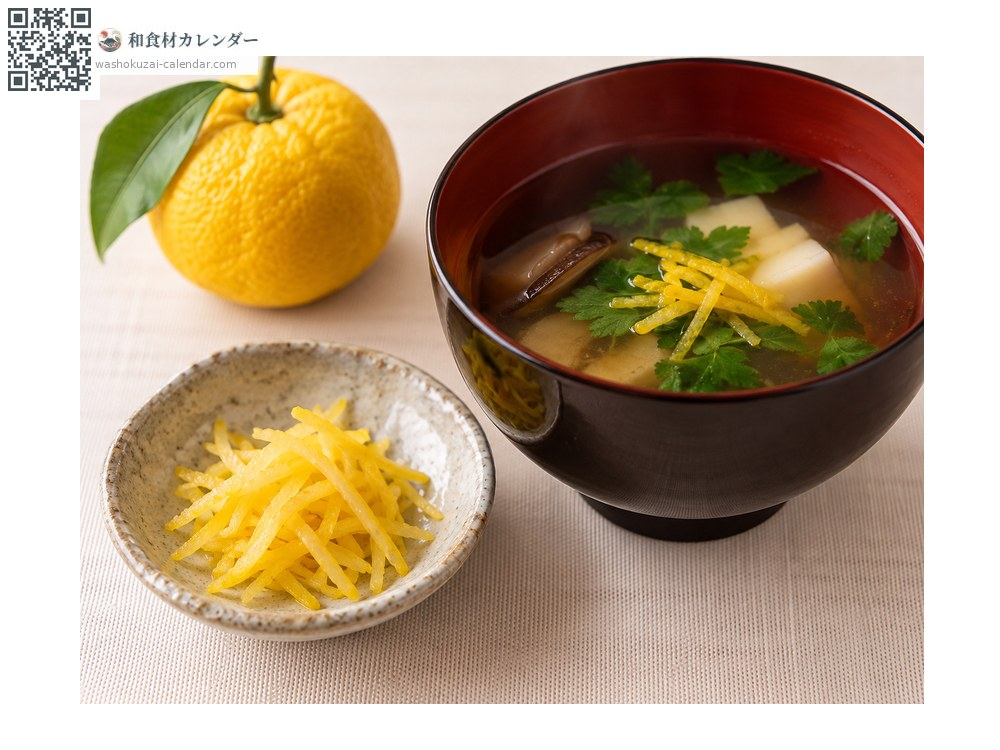
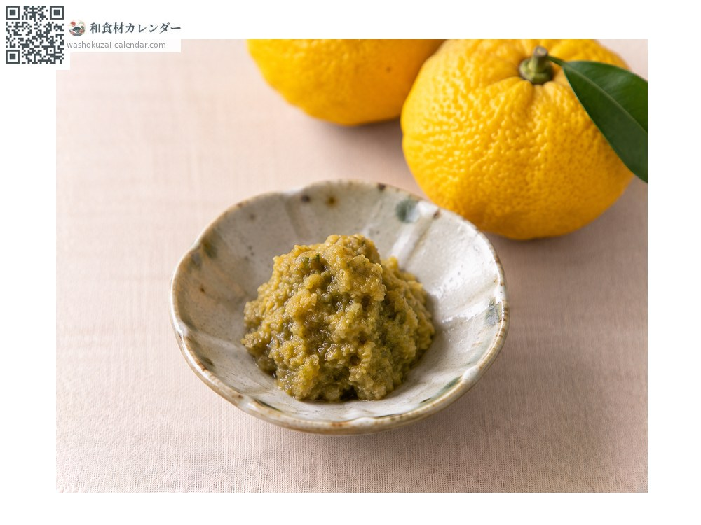
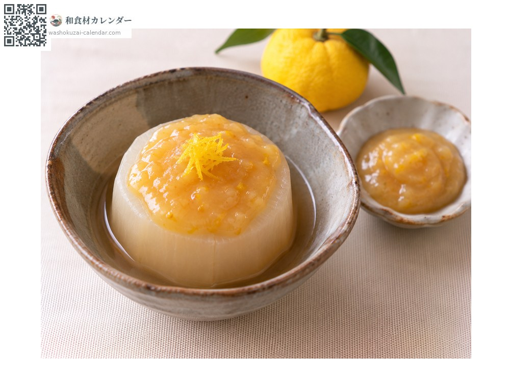
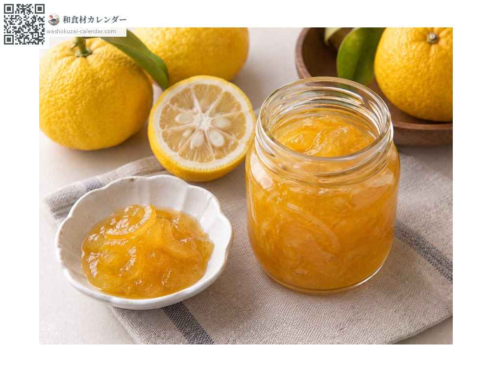

Fruit
Yuzu
ユズ ゆず yuzu
Also known asyuzu
At its best in Nov, Dec

When it is at its best
Jan
Feb
Mar
Apr
May
Jun
Jul
Aug
Sep
Oct
Nov
Dec
In seasonAvailable
How to cook

As a garnish
Peel shaved over soups and hot pots.

Yuzu kosho (yuzu and chilli paste)
Made from the peel, chilli and salt.

Yuzu miso
Miso worked with yuzu juice and zest. For simmered daikon and dengaku.

Jam
Cooked down with the peel.
How to choose
Taut, glossy skin with vivid colour and a strong aroma.
Storage
Bag and refrigerate so it does not dry out. Shaving the peel and freezing it is convenient.
Main areas
Good to know
Kochi grows about half the national crop. In cooking, the aroma of the peel is used more often than the juice.